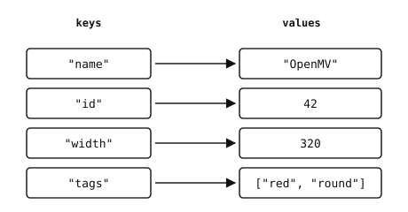

2.9. Dictionaries¶
Ein Dictionary ist eine Zuordnung von Schlüsseln zu Werten. Jeder Schlüssel wird direkt nachgeschlagen; das Dictionary merkt sich, welcher Wert zuletzt mit diesem Schlüssel verknüpft war.
2.9.1. Dictionaries erstellen¶
Verwenden Sie geschweifte Klammern mit key: value-Paaren oder den dict-Konstruktor:
empty = {}
person = {"name": "OpenMV", "id": 42}
counts = dict(a=1, b=2, c=3) # keyword form
pairs = dict([("x", 1), ("y", 2)]) # from a list of pairs
Werte können beliebige Typen sein – Strings, Zahlen, Listen, sogar andere Dicts:
config = {
"name": "OpenMV",
"id": 42,
"width": 320,
"tags": ["red", "round"],
}

Jeder Schlüssel in einem Dictionary wird genau einem Wert zugeordnet.¶
2.9.2. Zugriff und Mitgliedschaft¶
Die Indizierung mit [] ruft den Wert für einen Schlüssel ab. Ein fehlender Schlüssel löst KeyError aus:
>>> person = {"name": "OpenMV", "id": 42}
>>> person["name"]
'OpenMV'
>>> person["missing"]
Traceback (most recent call last):
File "<stdin>", line 1, in <module>
KeyError: 'missing'
Für ein fehlertolerantes Nachschlagen verwenden Sie dict.get(). Es gibt None für einen fehlenden Schlüssel zurück oder einen Wert, den Sie als zweites Argument übergeben:
>>> person.get("name")
'OpenMV'
>>> person.get("missing") # returns None
>>> person.get("missing", "n/a")
'n/a'
Das Schlüsselwort in prüft die Mitgliedschaft von Schlüsseln – nicht von Werten:
>>> "name" in person
True
>>> "OpenMV" in person
False
2.9.3. Hinzufügen, Aktualisieren und Entfernen¶
Die Zuweisung an d[key] fügt den Eintrag hinzu, wenn der Schlüssel neu ist, und überschreibt ihn, wenn er bereits existiert:
>>> person["seen"] = 1
>>> person["seen"] = 2 # overwrites
>>> person
{'name': 'OpenMV', 'id': 42, 'seen': 2}
Das Entfernen gibt es in mehreren Formen:
del d[key]– entfernt einen Eintrag; löstKeyErroraus, wenn der Schlüssel fehlt.dict.pop()– entfernt den Wert und gibt ihn zurück; ein optionaler Standardwert lässt Sie die Ausnahme vermeiden.dict.clear()– entfernt jeden Eintrag.
dict.update() führt ein anderes Dictionary (oder eine Liste von (key, value)-Paaren) in den Empfänger ein und überschreibt dabei alle übereinstimmenden Schlüssel:
>>> person.update({"id": 100, "owner": "alice"})
>>> person
{'name': 'OpenMV', 'id': 100, 'seen': 2, 'owner': 'alice'}
2.9.4. Iterieren¶
Das direkte Iterieren über ein Dictionary liefert seine Schlüssel in Einfügereihenfolge:
for k in person:
print(k)
Drei Views bieten expliziten Zugriff:
dict.keys()– die Schlüssel (genau wie das Iterieren über das Dict).dict.values()– die Werte.dict.items()–(key, value)-Tupel, perfekt zum Entpacken in einer Schleife.
for key, value in person.items():
print(key, "=", value)
2.9.5. Was als Schlüssel dienen kann¶
Dictionary-Schlüssel müssen hashbar sein – ihr Wert darf sich während ihrer Lebensdauer nicht ändern. Gängige hashbare Typen sind:
Veränderliche Typen wie list, dict und bytearray können keine Schlüssel sein; einen davon zu verwenden löst TypeError aus. Tupel aus unveränderlichen Werten sind die übliche Methode, um ein Dictionary über einen zusammengesetzten Bezeichner wie eine 2D-Gitterkoordinate zu indizieren:
>>> grid = {}
>>> grid[(0, 0)] = "start"
>>> grid[(5, 7)] = "end"
2.9.6. Länge¶
len() gibt die Anzahl der Einträge zurück:
>>> len(person)
4